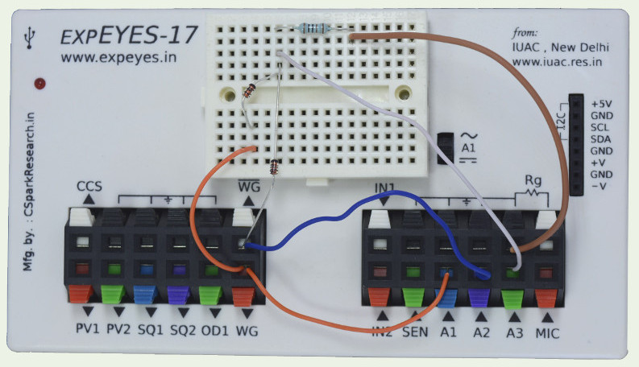

Full wave rectifier
The implementation of full wave rectifier requires two AC waveforms,
having 180 degree phase difference. Generally it is done using a
transformer with center tap. We are using the WG and WG bar outputs for
the same. WG is monitored by oscilloscope channel A1 and WG bar on A2. The
rectified output is connected to A3. The observed waveform will be a
bit noisy without the load resistor, connecting a 1k resistor gives a
clean rectified waveform. The voltage drop across the diode is clearly
visible. Connect different values of capacitors to view the filtering
effect.
 |
 |
| Wiring Diagram |
Photograph of the experimental setup |

|
| Screen shot of the oscilloscope program showing inputs and output
of full wave rectifier. 1N4148 diode at 1000Hz and 1kOhm load
resistor. |
Output with R = 1kOhm and C = 1uF is shown below. It can be seen that the
frequency of ripple in the case of full wave rectifier is double the
frequency of the input.